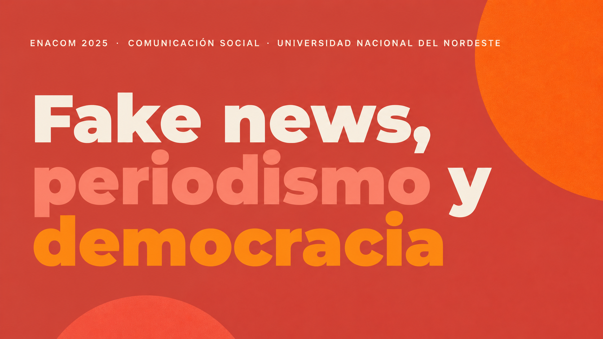

Crisis, comunicación y democracia
Este eje aborda la relación entre las crisis socioeconómicas y políticas, la comunicación pública, el periodismo, la circulación de información y los desafíos democráticos.
Un recorrido por los principales debates, ponencias y producciones del ENACOM 2025, realizado en San Luis.
Un recorrido por los principales momentos que dieron forma al Encuentro Nacional de Carreras de Comunicación y a la articulación federal de las carreras de comunicación en Argentina.
El Encuentro Nacional de Carreras de Comunicación (ENACOM) reúne a estudiantes, docentes, investigadores, graduados y profesionales vinculados al campo de la comunicación social de diferentes universidades del país.
A lo largo de sus distintas ediciones, el encuentro se consolidó como un espacio de intercambio académico, producción colectiva y debate sobre las transformaciones sociales, culturales, políticas y tecnológicas que atraviesan a la comunicación.
Se crea la Asociación Federal de Carreras de Comunicación Social (AFACOS), en el contexto del retorno de la democracia en Argentina.
La organización buscó fortalecer el vínculo entre las carreras de comunicación del país mediante el intercambio académico, la investigación, la reflexión crítica sobre los medios y la formación profesional.
Su creación sentó una de las bases para la posterior conformación de FADECCOS y el desarrollo del ENACOM.
Se consolida la Federación Argentina de Carreras de Comunicación Social (FADECCOS), continuando el proceso iniciado por AFACOS.
La federación permitió ampliar la representación de las carreras de comunicación, fortalecer el intercambio entre universidades e impulsar investigaciones y encuentros nacionales vinculados al campo.
En la ciudad de Olavarría se realiza el primer Encuentro Nacional de Carreras de Comunicación.
El encuentro surge como un espacio destinado a reunir estudiantes, docentes, investigadores y graduados de comunicación social de distintos puntos del país.
A partir de esta primera edición comienzan a desarrollarse debates sobre medios, periodismo, políticas de comunicación, cultura, educación y tecnologías.
Durante sus primeras ediciones, el ENACOM comienza a desarrollarse en distintas provincias argentinas, profundizando su carácter federal.
Crece la participación de estudiantes e investigadores, aparecen nuevas discusiones vinculadas con internet y comunicación digital y se incorporan producciones audiovisuales y multimediales.
El encuentro comienza a consolidarse no solamente como un espacio de exposición académica, sino también como un lugar de producción colectiva de conocimientos.
Las transformaciones tecnológicas y sociales amplían progresivamente los debates presentes en el encuentro.
Redes sociales, convergencia digital, desinformación, comunicación política, derechos comunicacionales, comunicación y género y democratización de la palabra comienzan a ocupar un lugar central.
El ENACOM acompaña así las transformaciones del campo profesional y académico de la comunicación.
La pandemia de COVID-19 modifica las actividades académicas presenciales y obliga a transformar las dinámicas de intercambio.
La virtualidad, las plataformas digitales y las nuevas formas de circulación de contenidos adquieren un papel todavía más importante dentro del campo de la comunicación.
El ENACOM vuelve a encontrarse presencialmente en Mendoza luego del período más crítico de la pandemia.
Los debates incorporan con mayor fuerza cuestiones como la virtualización de la vida cotidiana, la sobreinformación, las noticias falsas y el papel de los medios durante situaciones de crisis.
En septiembre de 2024, la Asamblea de FADECCOS aprueba la candidatura de la Facultad de Ciencias Humanas de la Universidad Nacional de San Luis como sede del ENACOM 2025.
La elección da continuidad al carácter federal del encuentro y reconoce la trayectoria académica de la carrera de Comunicación Social de la universidad.
Los días 5, 6 y 7 de noviembre de 2025, la Universidad Nacional de San Luis fue sede del XXII Encuentro Nacional de Carreras de Comunicación.
Bajo el lema “Tiempo de comunicación. Diálogos sobre pasado y presente en un mundo acelerado”, la edición puso en diálogo la trayectoria histórica del campo con las transformaciones contemporáneas de la comunicación.
Participaron estudiantes, docentes, investigadores, comunicadores, extensionistas y profesionales provenientes de diferentes provincias y países de América Latina.
Los días 4, 5 y 6 de noviembre de 2026, la ciudad de Corrientes recibirá el XXIII Encuentro Nacional de Carreras de Comunicación.
La sede será el Campus Cabral de la Universidad Nacional del Nordeste, con la carrera de Comunicación Social de la Facultad de Humanidades como anfitriona.
Esta edición se desarrollará bajo el lema:
“Pensar la comunicación y la democracia en las encrucijadas del siglo XXI”
El encuentro propone debatir los desafíos contemporáneos de la comunicación y el periodismo, promoviendo espacios de diálogo y nuevas líneas de acción en intervención, docencia e investigación.
Una mirada visual sobre las jornadas realizadas en la Facultad de Ciencias Humanas de la Universidad Nacional de San Luis.
Las fotografías se presentan con identificación de su fuente y autoría.
El recorrido reúne algunas de las principales problemáticas abordadas durante el ENACOM 2025.
Este eje aborda la relación entre las crisis socioeconómicas y políticas, la comunicación pública, el periodismo, la circulación de información y los desafíos democráticos.
Dos de los temas trabajados en nuestro recorrido sobre comunicación, periodismo y democracia.
Esta problemática aborda las formas de hostigamiento, censura, violencia simbólica y presión pública que afectan el trabajo periodístico y el derecho social a estar informado.

La circulación de fake news, la inteligencia artificial y la desinformación transforman la forma en que se produce, distribuye y recibe información.
Ver material completo
Algunas de las mesas y especialistas que participaron del ENACOM 2025.
Para una genealogía del campo: ¿de dónde venimos?
Poné a prueba lo que aprendiste durante el recorrido.
Utilizá estas herramientas para adaptar la experiencia de lectura según tus necesidades.
ENACOM 2025 invita a pensar el tiempo de la comunicación como una trama viva: memoria, presente, conflicto, tecnología y derecho a la información en diálogo.